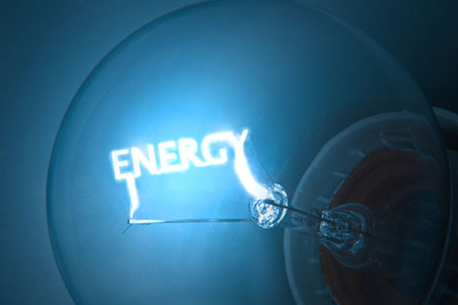

Work and Energy

When a force acts upon an object to cause a displacement of the object,
it is said that work was done upon the object.
SI unit of work is newton-metre or joule(J).
The work done by a constant force of magnitude F on a
point that moves a displacement (not distance) s in the direction of the force is the product,
W = Fs.
Energy is the ability to do work.
SI unit of energy is joule.
There are different types of energy like
Solar energy, Kinetic energy, Thermal energy etc,.
Energy is very important in our day to day life.
For example,We are able to move around and lift objects due to muscular energy.
We are able to use electrical appliances due to elecrical energy.
But Energy can neither be created nor be destroyed.
It can only be converted to other form.
For example, In a bulb electrical energy is converted into heat and light energy.